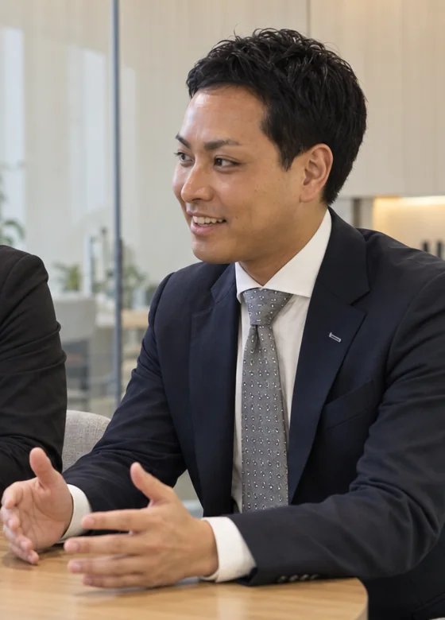
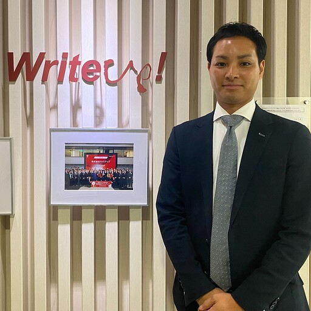

この記事の出典について（本人確認が済みしだい外します）
- この記事は本人確認前の草案です。確認のため公開しています。
- 無印 … 本人のインタビュー回答そのまま
- 推測 … 記事として成立させるため、書き手が想像で補った描写。要修正
- 要確認 … 本人が別の場で書いていた事実。掲載の可否を本人に確認
起その社長は、自分の携帯を遡っていた
商談の途中で、社長が言葉を止めた。推測
スマートフォンを取り出し、親指で画面を上へ、上へと送っていく。探しているのは、ずいぶん前のやり取りらしい。沈黙が続く。推測
言った言わないになって、個人のLINEを遡って経緯を確認したことがあります。
商談で聞いた、ある社長の言葉
村田峻平は、その手つきを黙って見ていた。推測
見覚えが、あったからだ。推測
起保険を売っていた頃、村田も同じことをしていた

村田には前職がある。保険だ。
その仕事を、彼はもうしていない。辞めた理由について、村田は多くを語らない。推測 ただ、今回のインタビューの最後に一度だけ、こんな言葉が出てきた。
それができていたら、もしかしたら私も保険業をやめずにいたのかな。
村田 峻平
何ができていたら、なのか。それはこの記事の最後に置く。
いま村田は、AIのサービスを売る側にいる。朝、誰よりも早く社内の会に入り、いちばん前の席に座る。要確認 売る商品は変わったが、人の話を聞く仕事であることは変わらなかった。推測
承機能を並べたら、「別に困ってるわけじゃない」と言われた
最初のうち、村田は覚えたことをそのまま話していた。推測 LINEで自動化できます。AIが返信します。できることを、順番に並べていく。
返ってきたのは、こういう言葉だった。
別に困ってるわけじゃない。
商談で聞いた言葉
どの商品を使ってどうなるかが分からないと、判断できない。
こちらが課題だと思って持っていったものが、相手の本当の困り事ではなかった。村田はそう振り返る。
社長たちの反応は、だいたい同じだったという。チャットボットで聞く以外に、売上につながるAIって本当にあるの——半信半疑のまま、話は先に進まない。
承売れない理由は、値段ではなかった
金額を出しても、同じだった。
高い。相場が全然分からない。動いているものを見てからじゃないと判断できない。
三つ目の言葉を聞いたとき、村田の中で何かが引っかかった。推測 社長たちは値段を拒んでいるわけではない。値段を判断するための材料を、そもそも持っていない。
見たことがないものに、高いも安いもない。当たり前のことだった。推測
転攻めに使わせようとして、逆効果になった日
忘れられない商談がある。相手は保険を扱う会社だった。推測
村田にとっては、古巣にあたる業界だ。ここなら分かる。そう思っていた。推測
AIから顧客へ発信を増やしていきましょう——そう提案したとき、相手の顔が曇った。推測
AIから発信するのは、金融商品だからお客さんが怖がる。
商談で聞いた言葉
攻めにAIを使うことが、逆効果になることもあった。村田は、そう言葉を選んで話す。
いちばん分かっているはずの業界で、いちばん読み違えた。推測
この一日が、村田の中の順番を入れ替えることになる。推測
転本当に欲しかったのは、新規ではなかった
商談で聞く言葉を、村田は並べ直してみた。推測
うちはマンパワーがないから、AIに頼るしかない。とにかく時間を生みたい。言った言わないになって、個人のLINEを遡った。
どれも、新しいお客さんを増やしたいという話ではなかった。
お客様が本当に欲しいのは新規よりも、既存のお客様への連絡や記録、穴の空いたバケツを塞ぐ方法だったのかな、と。
村田 峻平
穴の空いたバケツ。水を足し続けるより先に、やることがある。
ここで、村田の中でLシンクの位置づけが変わった。LINEで売るための道具ではない。社長の手が回らないお客さんとの接点を、代わりに持ち続ける仕組みだ。
そう捉え直したとき、あの日スマートフォンを遡っていた社長の姿が、はじめて別の意味を持って見えてきた。推測 あれは記録が無いという話ではなく、その会社のお客さんとの関係が、社長個人の携帯の中にしか無いという話だった。推測
結商材名を出す前に、黙って待つようになった

やり方を変えた。
ヒアリングでは、商材名を出す前に、お客さん自身の言葉で困り事が出てくるまで待つ。こちらから課題を提示しない。「この商材がいいですよ」ではなく、「お客さんの課題を解決するのがこれなんです」という順番にした。
デモも変えた。機能紹介をやめ、その会社の受付、記録、担当への連絡という実際の業務の流れで動かして見せる。見てもらわないと金額も判断できないのだから、先に見てもらう。
そして、前職の話をするようになった。保険の現場にいた頃の話をすると、一気に距離が縮まるのだという。
業界の痛みを分かってる人から届ける。自分のお困り事もそうでしたし、だからこそ私から保険の代理店さんにご紹介させていただくことが多いんです。
村田 峻平
辞めた仕事が、武器になった。推測
結「何でもできます」をやめたら、信頼が返ってきた
もうひとつ、村田が変えたことがある。
できないことを、最初に正直に言うようにした。
「何でもできます」というよりも、合わない時は合わない、できないことはできない、というところが、はるかに信頼につながってくる。
村田 峻平
売る人間が自分から手札を減らす行為だ。普通は怖い。推測 それでも村田がそうするのは、売れるかどうかより先に、信じてもらえるかどうかを取ったからだろう。推測
当時の自分に助言するなら、と聞くと、答えは短かった。
機能を説明しに行くな。相手の一日の業務を聞きに行け。
村田 峻平